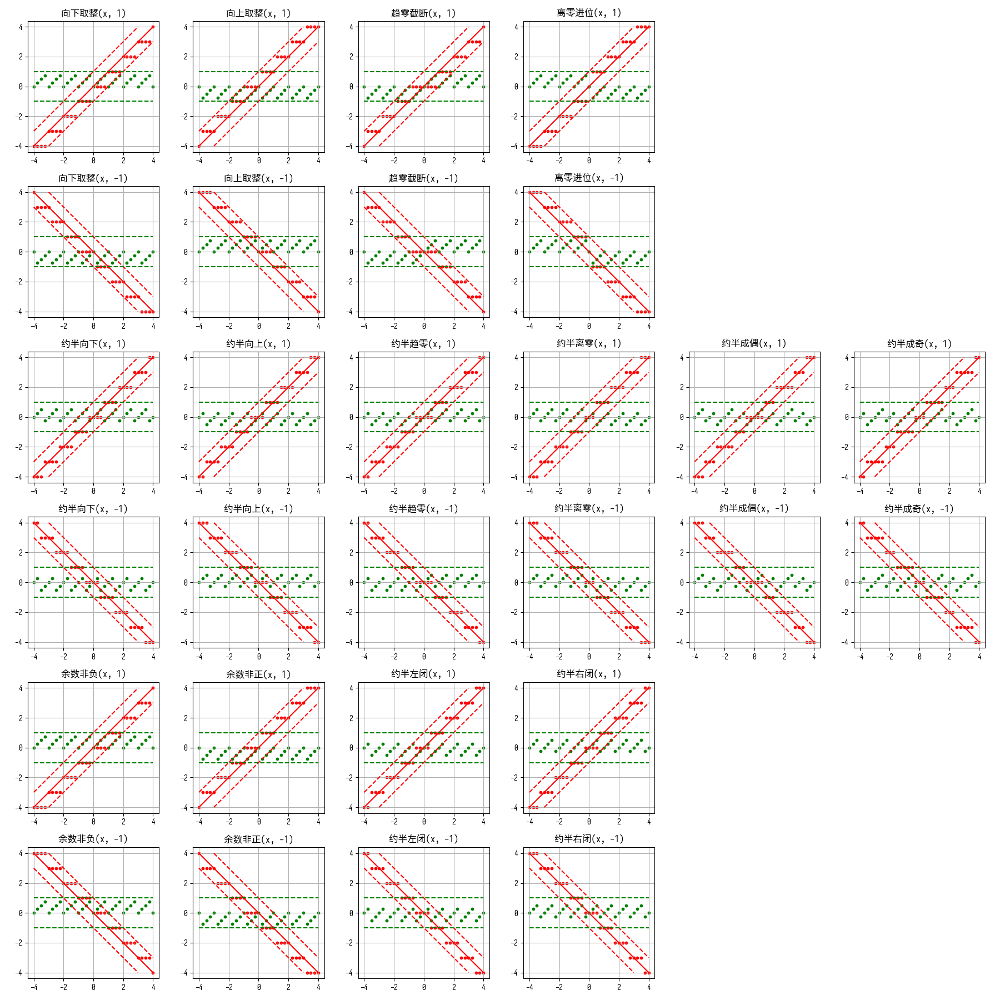
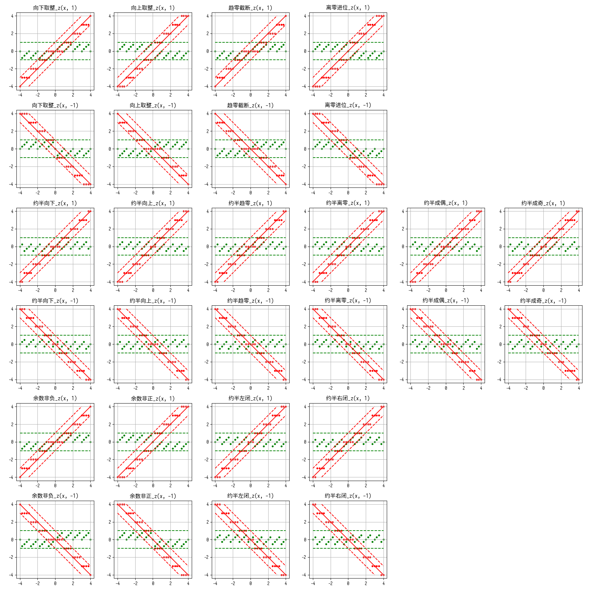
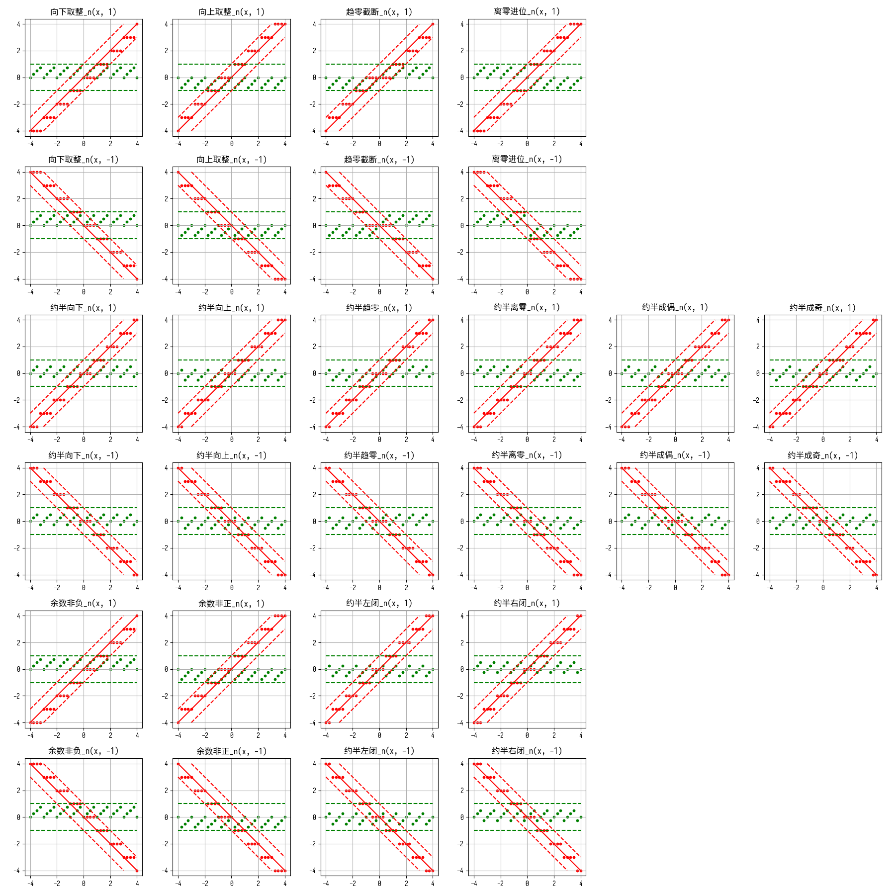
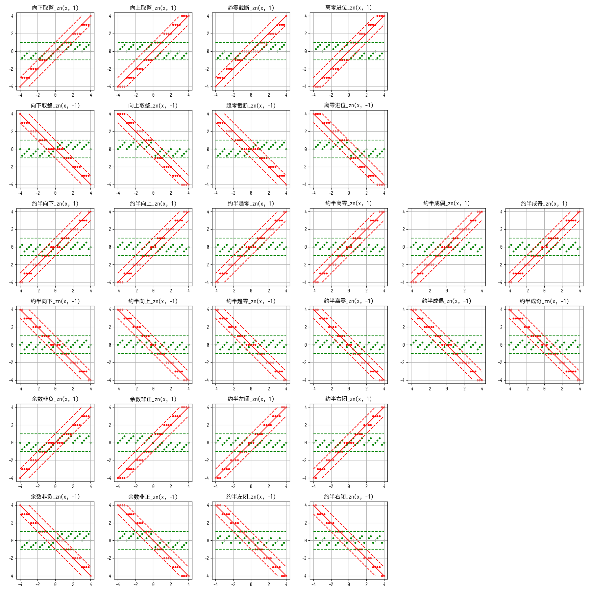

1 引言
我上中学的时候，有同学问我 \(-5\) 除以 \(-2\) 得到的余数是几。好像 \(1\) 和 \(-1\) 作为答案都有道理。负数的带余除法这件事确实有点复杂。我将在这里总结一些带余除法策略。
2 记号
考虑一个带余除法的过程：
\[z \div n = q \cdots r\]
我们称：
- \(z\) 为被除数；
- \(n\) 为除数；
- \(q\) 为商；
- \(r\) 为余数。
3 基本规则
除了 \(n \neq 0\) 这种众所周知的要求外，我们探讨的带余除法策略至少都要遵循如下三条规则。
- \(nq + r = z\)
- \(|r| < |n|\)
- \(q \in \mathbb{Z}[\mathrm{i}]\)
\(\mathbb{Z}[\mathrm{i}]\) 是高斯整数集合。高斯整数是指满足了 \(a \in \mathbb{Z}\) 和 \(b \in \mathbb{Z}\) 的复数 \(a + b \mathrm{i}\) 。如果不考虑复数的话，把它换成 \(\mathbb{Z}\) 就够了。
在这里，等式 \(nq + r = z\) 我们暂且称为“模除恒等式”。
给定任何一对 \((z, n)\) ，我们如果知道了 \(q\) 和 \(r\) 的其中一个，就自然能得到另一个，依据就是模除恒等式。所以我们可以通过只描述一个策略如何给出 \(q\) 来完整地描述出这个策略，反之亦然。
给定任何一个带余除法策略，给定任何一对 \((z, n)\) ，策略所给出的符合规则的 \((q, r)\) ，也应当是有且仅有一对的。
4 各种带余除法策略
4.1 基于将商取整的策略
严格地说，对于取整函数 \(\operatorname{round'}\) ，我们规定
\[q = \operatorname{round'} \left( \dfrac{z}{n} \right)\]
然后再算出余数 \(r\) 。
对于参数 \(x\) ，取整函数必须满足 \(x-1 < \operatorname{round'}(x) < x+1\) 。直观上就是在说：对于整数取整，结果一定得是这个整数本身；对夹在两个相邻整数中间的值，结果一定得是这两个整数之中的一个。可以证明，这样的要求才能保证性质 \(|r| < |n|\) 成立。（其实我没证明，我只是感觉它对。）
取整函数有很多种。列表如下：
| 中文名 | 英文名 | 所算出的余数拥有的性质 |
|---|---|---|
| 向下取整 | toward negative | 与除数符号一致 |
| 向上取整 | toward positive | 与除数符号相反 |
| 趋零截断 | toward zero | 与被除数符号一致 |
| 离零进位 | toward away | 与被除数符号相反 |
| 约半向下（四舍五入） | ties to negative | 绝对值不超过除数绝对值一半 |
| 约半向上（五舍六入） | ties to positive | 绝对值不超过除数绝对值一半 |
| 约半趋零 | ties to zero | 绝对值不超过除数绝对值一半 |
| 约半离零 | ties to away | 绝对值不超过除数绝对值一半 |
| 约半成偶（奇进偶舍） | ties to even | 绝对值不超过除数绝对值一半 |
| 约半成奇（偶进奇舍） | ties to odd | 绝对值不超过除数绝对值一半 |
这里的英文起名方法参考了 IEEE 754-2019 标准。
我们之后就可以用取整方式来称呼其所对应的带余除法策略了。
似乎 ties to even 和 ties to odd 没有对应的 toward even 和 toward odd。然而后两者的设计其实已经和“如何将实数修约为整数”这个问题本身一样难缠了。至少部分是这样。
4.2 基于无条件控制余数符号的策略
限制余数只能在某个长度为 \(|n|\) 而非 \(|2n|\) 且半闭半开的范围内，这样便唯一确定了余数 \(r\) ，从而确定了商 \(q\) 。
严格地说，所有可能的余数只能在如下集合中：
\[\{\ldots, \, z - 2|n|, \, z - |n|, \, z, \, z + |n|, \, z + 2|n|, \ldots\}\]
我们规定某个形如 \([b, b + |n|)\) 或形如 \((b - |n|, b]\) 的区间，则上述集合与这一区间的交集必定有且仅有一个数，它就是 \(r\) 。随后再据此算出 \(q\) 。
当然，区间必须包含于 \((-|n|, |n|)\) 中，以满足 \(|r| < |n|\) 这一基本规则。
有四种区间，它们便能对应四种带余除法策略。
- \(r \in [0, |n|)\)（也叫欧几里得带余除法）
- \(r \in (-|n|, 0]\)
- \(r \in \left[ -\dfrac{|n|}{2}, \dfrac{|n|}{2} \right)\)
- \(r \in \left( -\dfrac{|n|}{2}, \dfrac{|n|}{2} \right]\)
例如用欧几里得除法计算 \(-19 \div -3\) 。随便找一个带余除法策略（比如向下取整策略）得到一个备选余数为 \(-1\) 。于是另一个备选就将是 \(-1 + \left| -3 \right| = 2\) 。所以余数 \(r\) 的两个可能备选项分别是 \(-1\) 和 \(2\) 。我们要选非负，也就是满足所谓的 \(r \in [0, |n|)\) 的。所以 \(r = 2\) 。
4.3 基于先将被除数和/或除数取绝对值再做其他除法的策略
欧几里得带余除法还可以看作：对除数先取绝对值再做某个其他除法得到商再为之添加与除数相同的符号。这里的“某个其他除法”是向下取整除法。对偶地，若改为向上取整除法，那么就是“余数恒为非正”了。
因此可以推广：
- 对除数先取绝对值再做上方两大类的除法
- 对被除数先取绝对值再做上方两大类的除法
- 同时先对被除数和除数都取一下绝对值再做上方两大类的除法
例如，对除数先取绝对值再做向下取整除法再为商添加与除数相同的符号，严格描述即为：
\[q = \operatorname{sgn}(n) \left\lfloor \dfrac{z}{|n|} \right\rfloor\]
我们将这样的带余除法策略记作“向下取整_n”。相应地还可以有“向下取整_z”：
\[q = \operatorname{sgn}(z) \left\lfloor \dfrac{|z|}{n} \right\rfloor\]
以及“向下取整_zn”：
\[q = \operatorname{sgn}(z) \operatorname{sgn}(n) \left\lfloor \dfrac{|z|}{|n|} \right\rfloor\]
先前的所有带余除法策略都可以这样衍生出三个新版本，策略数量立刻便翻了四倍。
不过其实很多策略是本质相同的。例如正如本节开头所说，刚刚的“向下取整_n”其实和“余数非负”策略完全相同。稍后会用代码分析被除数和除数在各种条件下，策略的行为等价类。
事实上，这些策略中只有四种是新的：
| 策略 | 所算出的余数拥有的性质 |
|---|---|
| 向下取整_z | 与被除数和除数符号的异或一致 |
| 向上取整_z | 与被除数和除数符号的同或一致 |
| 约半向下_z | 绝对值不超过除数绝对值一半 |
| 约半向上_z | 绝对值不超过除数绝对值一半 |
这里有了“异或”“同或”。我们是将负号看成 1（true）、正号看成 0（false）来计算的。
5 图表
每一个子图，所使用的带余除法策略和除数 \(n\) 都是固定的。横轴为被除数 \(z\) ，红色点是商 \(q\) ，绿色点是余数 \(r\) 。这一设定模仿了维基百科页面 模除 。




画图代码见文末。
6 各种带余除法策略之间的比较
我们可以从如下几个方面比较各种带余除法策略。
- 周期：在除数确定时，余数是被除数的周期函数；
- 单调：在满足上一条的前提下，能在周期上单调；
- 被同：在被除数符号确定时，存在一个方向使得余数所在区间总是这边闭那边开；
- 除同：在除数符号确定时，存在一个方向使得余数所在区间总是这边闭那边开；
- 小学：与小学数学（被除数和除数都为正……）兼容；
- 数论：与数论（除数为正……）兼容；
- 复数：可推广至复数；
- 近零：满足 \(r \in \left[ -\dfrac{|n|}{2}, \dfrac{|n|}{2} \right]\)
表格如下：
| 策略 | 周期 | 单调 | 被同 | 除同 | 小学 | 数论 | 复数 | 近零 |
|---|---|---|---|---|---|---|---|---|
| 向下取整 | ✔ | ✔ | ✔ | ✔ | ✔ | ✔ | ||
| 向上取整 | ✔ | ✔ | ✔ | ✔ | ||||
| 趋零截断 | ✔ | ✔ | ✔ | |||||
| 离零进位 | ✔ | ✔ | ||||||
| 约半向下 | ✔ | ✔ | ✔ | ✔ | ✔ | |||
| 约半向上 | ✔ | ✔ | ✔ | ✔ | ✔ | |||
| 约半趋零 | ✔ | ✔ | ✔ | |||||
| 约半离零 | ✔ | ✔ | ✔ | |||||
| 约半成偶 | ✔ | ✔ | ✔ | |||||
| 约半成奇 | ✔ | ✔ | ✔ | |||||
| 余数非负 | ✔ | ✔ | ✔ | ✔ | ✔ | ✔ | ||
| 余数非正 | ✔ | ✔ | ✔ | ✔ | ||||
| 约半左闭 | ✔ | ✔ | ✔ | ✔ | ✔ | |||
| 约半右闭 | ✔ | ✔ | ✔ | ✔ | ✔ | |||
| 向下取整_z | ✔ | |||||||
| 向上取整_z | ||||||||
| 约半向下_z | ✔ | |||||||
| 约半向上_z | ✔ |
没有评价“硬件支持是否容易”这个指标，因为我不懂硬件。
这个表格主要评测的是余数的性质好不好，所以对约半成偶和约半成奇有些不公平。而在实际中，这两种修约方式，以及对应的带余除法，其实是相当推荐的。IEEE 754 标准中要求实现提供的“remainder”操作更是要求无视其他设置，总是使用约半成偶的除法。
7 行为的等价类
许多除法在不同情况下行为是可能相同的，我们可以划分等价类。
-------- a(-+) n(-+) -------- 0. 余数非正 余数非正_n 向上取整_n 1. 余数非负 余数非负_n 向下取整_n 2. 向上取整 3. 向下取整 4. 离零进位 余数非正_z 余数非正_zn 向上取整_zn 离零进位_n 离零进位_z 离零进位_zn 5. 约半右闭 约半右闭_n 约半向下_n 6. 约半向上 7. 约半向下 8. 约半左闭 约半向上_n 约半左闭_n 9. 约半成偶 约半成偶_n 约半成偶_z 约半成偶_zn 10. 约半成奇 约半成奇_n 约半成奇_z 约半成奇_zn 11. 约半离零 约半向上_zn 约半左闭_z 约半左闭_zn 约半离零_n 约半离零_z 约半离零_zn 12. 约半趋零 约半右闭_z 约半右闭_zn 约半向下_zn 约半趋零_n 约半趋零_z 约半趋零_zn 13. 趋零截断 余数非负_z 余数非负_zn 向下取整_zn 趋零截断_n 趋零截断_z 趋零截断_zn 14. 向上取整_z 15. 向下取整_z 16. 约半向上_z 17. 约半向下_z 共 18 个等价类 -------- a(-+) n(-) -------- 0. 余数非正 向下取整 余数非正_n 向上取整_n 1. 余数非负 向上取整 余数非负_n 向下取整_n 2. 离零进位 余数非正_z 余数非正_zn 向上取整_zn 向下取整_z 离零进位_n 离零进位_z 离零进位_zn 3. 约半右闭 约半向上 约半右闭_n 约半向下_n 4. 约半向下 约半左闭 约半向上_n 约半左闭_n 5. 约半成偶 约半成偶_n 约半成偶_z 约半成偶_zn 6. 约半成奇 约半成奇_n 约半成奇_z 约半成奇_zn 7. 约半离零 约半向上_zn 约半向下_z 约半左闭_z 约半左闭_zn 约半离零_n 约半离零_z 约半离零_zn 8. 约半趋零 约半右闭_z 约半右闭_zn 约半向上_z 约半向下_zn 约半趋零_n 约半趋零_z 约半趋零_zn 9. 趋零截断 余数非负_z 余数非负_zn 向上取整_z 向下取整_zn 趋零截断_n 趋零截断_z 趋零截断_zn 共 10 个等价类 -------- a(-+) n(+) -------- 0. 余数非正 向上取整 余数非正_n 向上取整_n 1. 余数非负 向下取整 余数非负_n 向下取整_n 2. 离零进位 余数非正_z 余数非正_zn 向上取整_z 向上取整_zn 离零进位_n 离零进位_z 离零进位_zn 3. 约半右闭 约半向下 约半右闭_n 约半向下_n 4. 约半向上 约半左闭 约半向上_n 约半左闭_n 5. 约半成偶 约半成偶_n 约半成偶_z 约半成偶_zn 6. 约半成奇 约半成奇_n 约半成奇_z 约半成奇_zn 7. 约半离零 约半向上_z 约半向上_zn 约半左闭_z 约半左闭_zn 约半离零_n 约半离零_z 约半离零_zn 8. 约半趋零 约半右闭_z 约半右闭_zn 约半向下_z 约半向下_zn 约半趋零_n 约半趋零_z 约半趋零_zn 9. 趋零截断 余数非负_z 余数非负_zn 向下取整_z 向下取整_zn 趋零截断_n 趋零截断_z 趋零截断_zn 共 10 个等价类 -------- a(-) n(-+) -------- 0. 余数非正 趋零截断 余数非正_n 余数非负_z 余数非负_zn 向上取整_n 向下取整_zn 趋零截断_n 趋零截断_z 趋零截断_zn 1. 余数非负 离零进位 余数非正_z 余数非正_zn 余数非负_n 向上取整_zn 向下取整_n 离零进位_n 离零进位_z 离零进位_zn 2. 向上取整 向下取整_z 3. 向下取整 向上取整_z 4. 约半右闭 约半离零 约半右闭_n 约半向上_zn 约半向下_n 约半左闭_z 约半左闭_zn 约半离零_n 约半离零_z 约半离零_zn 5. 约半向上 约半向下_z 6. 约半向下 约半向上_z 7. 约半左闭 约半趋零 约半右闭_z 约半右闭_zn 约半向上_n 约半向下_zn 约半左闭_n 约半趋零_n 约半趋零_z 约半趋零_zn 8. 约半成偶 约半成偶_n 约半成偶_z 约半成偶_zn 9. 约半成奇 约半成奇_n 约半成奇_z 约半成奇_zn 共 10 个等价类 -------- a(-) n(-) -------- 0. 余数非正 向下取整 趋零截断 余数非正_n 余数非负_z 余数非负_zn 向上取整_n 向上取整_z 向下取整_zn 趋零截断_n 趋零截断_z 趋零截断_zn 1. 余数非负 向上取整 离零进位 余数非正_z 余数非正_zn 余数非负_n 向上取整_zn 向下取整_n 向下取整_z 离零进位_n 离零进位_z 离零进位_zn 2. 约半右闭 约半向上 约半离零 约半右闭_n 约半向上_zn 约半向下_n 约半向下_z 约半左闭_z 约半左闭_zn 约半离零_n 约半离零_z 约半离零_zn 3. 约半向下 约半左闭 约半趋零 约半右闭_z 约半右闭_zn 约半向上_n 约半向上_z 约半向下_zn 约半左闭_n 约半趋零_n 约半趋零_z 约半趋零_zn 4. 约半成偶 约半成偶_n 约半成偶_z 约半成偶_zn 5. 约半成奇 约半成奇_n 约半成奇_z 约半成奇_zn 共 6 个等价类 -------- a(-) n(+) -------- 0. 余数非正 向上取整 趋零截断 余数非正_n 余数非负_z 余数非负_zn 向上取整_n 向下取整_z 向下取整_zn 趋零截断_n 趋零截断_z 趋零截断_zn 1. 余数非负 向下取整 离零进位 余数非正_z 余数非正_zn 余数非负_n 向上取整_z 向上取整_zn 向下取整_n 离零进位_n 离零进位_z 离零进位_zn 2. 约半右闭 约半向下 约半离零 约半右闭_n 约半向上_z 约半向上_zn 约半向下_n 约半左闭_z 约半左闭_zn 约半离零_n 约半离零_z 约半离零_zn 3. 约半向上 约半左闭 约半趋零 约半右闭_z 约半右闭_zn 约半向上_n 约半向下_z 约半向下_zn 约半左闭_n 约半趋零_n 约半趋零_z 约半趋零_zn 4. 约半成偶 约半成偶_n 约半成偶_z 约半成偶_zn 5. 约半成奇 约半成奇_n 约半成奇_z 约半成奇_zn 共 6 个等价类 -------- a(+) n(-+) -------- 0. 余数非正 离零进位 余数非正_n 余数非正_z 余数非正_zn 向上取整_n 向上取整_zn 离零进位_n 离零进位_z 离零进位_zn 1. 余数非负 趋零截断 余数非负_n 余数非负_z 余数非负_zn 向下取整_n 向下取整_zn 趋零截断_n 趋零截断_z 趋零截断_zn 2. 向上取整 向上取整_z 3. 向下取整 向下取整_z 4. 约半右闭 约半趋零 约半右闭_n 约半右闭_z 约半右闭_zn 约半向下_n 约半向下_zn 约半趋零_n 约半趋零_z 约半趋零_zn 5. 约半向上 约半向上_z 6. 约半向下 约半向下_z 7. 约半左闭 约半离零 约半向上_n 约半向上_zn 约半左闭_n 约半左闭_z 约半左闭_zn 约半离零_n 约半离零_z 约半离零_zn 8. 约半成偶 约半成偶_n 约半成偶_z 约半成偶_zn 9. 约半成奇 约半成奇_n 约半成奇_z 约半成奇_zn 共 10 个等价类 -------- a(+) n(-) -------- 0. 余数非正 向下取整 离零进位 余数非正_n 余数非正_z 余数非正_zn 向上取整_n 向上取整_zn 向下取整_z 离零进位_n 离零进位_z 离零进位_zn 1. 余数非负 向上取整 趋零截断 余数非负_n 余数非负_z 余数非负_zn 向上取整_z 向下取整_n 向下取整_zn 趋零截断_n 趋零截断_z 趋零截断_zn 2. 约半右闭 约半向上 约半趋零 约半右闭_n 约半右闭_z 约半右闭_zn 约半向上_z 约半向下_n 约半向下_zn 约半趋零_n 约半趋零_z 约半趋零_zn 3. 约半向下 约半左闭 约半离零 约半向上_n 约半向上_zn 约半向下_z 约半左闭_n 约半左闭_z 约半左闭_zn 约半离零_n 约半离零_z 约半离零_zn 4. 约半成偶 约半成偶_n 约半成偶_z 约半成偶_zn 5. 约半成奇 约半成奇_n 约半成奇_z 约半成奇_zn 共 6 个等价类 -------- a(+) n(+) -------- 0. 余数非正 向上取整 离零进位 余数非正_n 余数非正_z 余数非正_zn 向上取整_n 向上取整_z 向上取整_zn 离零进位_n 离零进位_z 离零进位_zn 1. 余数非负 向下取整 趋零截断 余数非负_n 余数非负_z 余数非负_zn 向下取整_n 向下取整_z 向下取整_zn 趋零截断_n 趋零截断_z 趋零截断_zn 2. 约半右闭 约半向下 约半趋零 约半右闭_n 约半右闭_z 约半右闭_zn 约半向下_n 约半向下_z 约半向下_zn 约半趋零_n 约半趋零_z 约半趋零_zn 3. 约半向上 约半左闭 约半离零 约半向上_n 约半向上_z 约半向上_zn 约半左闭_n 约半左闭_z 约半左闭_zn 约半离零_n 约半离零_z 约半离零_zn 4. 约半成偶 约半成偶_n 约半成偶_z 约半成偶_zn 5. 约半成奇 约半成奇_n 约半成奇_z 约半成奇_zn 共 6 个等价类
生成代码见文末。
8 在一些编程语言中的情况
TODO: 排版目前有问题。
关于 C++ 的 / 和 % 行为的变更，见 CWG issue 614 。
关于在更多语言中的情况，参考维基百科页面 模除 。
9 代码
这里是生成图与等价类输出的完整代码。
# 2026-07-22 divmod_plots.py
from __future__ import annotations
from collections.abc import Callable
from dataclasses import dataclass
from fractions import Fraction
from functools import wraps
from itertools import chain, groupby, product
import math
import operator as op
from termcolor import colored
import matplotlib.pyplot as plt
import matplotlib.font_manager as fm
import numpy as np
# -------- 编辑时和运行时检查 --------
type Rational = int | Fraction
rational_types_tuple = (int, Fraction)
type UnaryClosure[T] = Callable[[T], T]
type BinaryClosure[T] = Callable[[T, T], T]
type UnaryPred[T] = Callable[[T], bool]
type UnaryPredNonStrict[T] = Callable[[T], object]
def return_value_satisfies_conditional[R, **P](
conditional_cond: Callable[P, UnaryPredNonStrict[R]],
) -> UnaryClosure[Callable[P, R]]:
def wrapper(func: Callable[P, R]) -> Callable[P, R]:
@wraps(func)
def wrapped(*args: P.args, **kwargs: P.kwargs) -> R:
res = func(*args, **kwargs)
assert conditional_cond(*args, **kwargs)(res)
return res
return wrapped
return wrapper
def return_value_satisfies[R, **P](
cond: UnaryPredNonStrict[R],
) -> UnaryClosure[Callable[P, R]]:
def conditional_cond(*_1: P.args, **_2: P.kwargs) -> UnaryPredNonStrict[R]:
_ = _1
_ = _2
return cond
return return_value_satisfies_conditional(conditional_cond)
# TODO:
# 试图加入有默认值的 equiv 参数时推导总是出错。
# 不加入 equiv 参数时提示“TypeVar "R" 在泛型函数签名中仅显示一次 请改用 "object"”，
# 然而将带参数别名 UnaryClosure 展开后其实就不报错了。
def assert_same_behavior_as[R, S, **P](
f: Callable[P, S],
) -> UnaryClosure[Callable[P, R]]: # pyright: ignore[reportInvalidTypeVarUse]
def wrapper(func: Callable[P, R]) -> Callable[P, R]:
@wraps(func)
def wrapped(*args: P.args, **kwargs: P.kwargs) -> R:
res = func(*args, **kwargs)
assert res == f(*args, **kwargs)
return res
return wrapped
return wrapper
# -------- 通用 --------
def identity[T](obj: T) -> T:
return obj
# -------- 有理数相关运算 --------
def div_exact(a: Rational, n: Rational) -> Rational:
return Fraction(a, n)
def exact_wrapper_math_floor(a: Rational) -> Rational:
return math.floor(a)
def exact_wrapper_math_ceil(a: Rational) -> Rational:
return math.ceil(a)
def exact_wrapper_math_trunc(a: Rational) -> Rational:
return math.trunc(a)
def exact_wrapper_builtin_round(a: Rational) -> Rational:
return round(a)
def sgn(a: Rational) -> Rational:
return 0 if a == 0 else div_exact(a, abs(a))
def split_sgn(a: Rational) -> tuple[Rational, Rational]:
return sgn(a), abs(a)
HALF = div_exact(1, 2)
# -------- 谓词 --------
def is_integer(a: Rational) -> bool:
return a.is_integer()
def is_tie(a: Rational) -> bool:
return is_integer(a + HALF)
def is_even(a: Rational) -> bool:
return a % 2 == 0
def is_odd(a: Rational) -> bool:
return a % 2 == 1
def is_nonnegative(a: Rational) -> bool:
return a >= 0
def is_positive(a: Rational) -> bool:
return a > 0
def is_nonpositive(a: Rational) -> bool:
return a <= 0
def is_negative(a: Rational) -> bool:
return a < 0
# -------- 带余除法策略 --------
@dataclass(frozen=True)
class DivModAlgorithm(object):
@dataclass(frozen=True)
class DivFunction(object):
func: BinaryClosure[Rational]
def __call__(self, a: Rational, n: Rational) -> Rational:
return self.func(a, n)
@dataclass(frozen=True)
class ModFunction(object):
func: BinaryClosure[Rational]
def __call__(self, a: Rational, n: Rational) -> Rational:
return self.func(a, n)
func: DivFunction | ModFunction
name: str
@classmethod
def from_div(cls, div: BinaryClosure[Rational], name: str) -> DivModAlgorithm:
return cls(cls.DivFunction(div), name)
@classmethod
def from_mod(cls, mod: BinaryClosure[Rational], name: str) -> DivModAlgorithm:
return cls(cls.ModFunction(mod), name)
@staticmethod
def _check_qr_res(qr: tuple[Rational, Rational]) -> bool:
q, _ = qr
return is_integer(q)
@staticmethod
def _get_r(a: Rational, n: Rational, q: Rational) -> Rational:
return a - q * n
@staticmethod
def _get_q(a: Rational, n: Rational, r: Rational) -> Rational:
return div_exact(a - r, n)
@return_value_satisfies(_check_qr_res)
def divmod(self, a: Rational, n: Rational) -> tuple[Rational, Rational]:
if isinstance(self.func, DivModAlgorithm.DivFunction):
q = self.func(a, n)
r = DivModAlgorithm._get_r(a, n, q)
return (q, r)
r = self.func(a, n)
q = DivModAlgorithm._get_q(a, n, r)
return (q, r)
@return_value_satisfies(is_integer)
def div(self, a: Rational, n: Rational) -> Rational:
if isinstance(self.func, DivModAlgorithm.DivFunction):
return self.func(a, n)
return DivModAlgorithm._get_q(a, n, self.func(a, n))
def mod(self, a: Rational, n: Rational) -> Rational:
if isinstance(self.func, DivModAlgorithm.ModFunction):
return self.func(a, n)
return DivModAlgorithm._get_r(a, n, self.func(a, n))
def version_z(self) -> DivModAlgorithm:
@return_value_satisfies(is_integer)
def div(a: Rational, n: Rational) -> Rational:
sa, absa = split_sgn(a)
return sa * self.div(absa, n)
return DivModAlgorithm.from_div(div, f'{self.name}_z')
def version_n(self) -> DivModAlgorithm:
@return_value_satisfies(is_integer)
def div(a: Rational, n: Rational) -> Rational:
sn, absn = split_sgn(n)
return sn * self.div(a, absn)
return DivModAlgorithm.from_div(div, f'{self.name}_n')
def version_zn(self) -> DivModAlgorithm:
@return_value_satisfies(is_integer)
def div(a: Rational, n: Rational) -> Rational:
sa, absa = split_sgn(a)
sn, absn = split_sgn(n)
return sa * sn * self.div(absa, absn)
return DivModAlgorithm.from_div(div, f'{self.name}_zn')
def make_div_from_rounding(round: UnaryClosure[Rational]) -> BinaryClosure[Rational]:
@return_value_satisfies(is_integer)
def div(a: Rational, n: Rational) -> Rational:
return round(div_exact(a, n))
return div
def make_mod_from_interval_maker(maker: Callable[[Rational], FiniteRationalInterval]) -> BinaryClosure[Rational]:
def interval_in_range(n: Rational, /) -> UnaryPred[FiniteRationalInterval]:
def check(retval: FiniteRationalInterval, /) -> bool:
return retval.is_half_open() and retval in FiniteRationalInterval(-abs(n), abs(n), False, False)
return check
maker = return_value_satisfies_conditional(interval_in_range)(maker)
# TODO: 目前 `mod` 函数及其装饰器所需要的函数都要造区间。
def remainder_in_range(_: Rational, n: Rational, /) -> UnaryPred[Rational]:
interval = maker(n)
def check(x: Rational, /) -> bool:
return x in interval
return check
@return_value_satisfies_conditional(remainder_in_range)
def mod(a: Rational, n: Rational) -> Rational:
interval = maker(n)
res = a % n
return res if res in interval else res - n
return mod
# -------- 各种 round 方式 --------
# IEEE 754 命名
@assert_same_behavior_as(exact_wrapper_math_floor)
def round_to_integral_toward_negative(a: Rational) -> Rational:
if is_integer(a):
return a
return a.numerator // a.denominator
# IEEE 754 命名
@assert_same_behavior_as(exact_wrapper_math_ceil)
def round_to_integral_toward_positive(a: Rational) -> Rational:
if is_integer(a):
return a
return (a.numerator + a.denominator - 1) // a.denominator
# IEEE 754 命名
@assert_same_behavior_as(exact_wrapper_math_trunc)
def round_to_integral_toward_zero(a: Rational) -> Rational:
if is_nonnegative(a):
return round_to_integral_toward_negative(a)
return round_to_integral_toward_positive(a)
def round_to_integral_toward_away(a: Rational) -> Rational:
if is_nonnegative(a):
return round_to_integral_toward_positive(a)
return round_to_integral_toward_negative(a)
def another_round_to_integral_ties_to_negative(a: Rational) -> Rational:
return round_to_integral_toward_positive(a - HALF)
@assert_same_behavior_as(another_round_to_integral_ties_to_negative)
def round_to_integral_ties_to_negative(a: Rational) -> Rational:
if not is_tie(a):
return round(a)
return round_to_integral_toward_negative(a)
def another_round_to_integral_ties_to_positive(a: Rational) -> Rational:
return round_to_integral_toward_negative(a + HALF)
@assert_same_behavior_as(another_round_to_integral_ties_to_positive)
def round_to_integral_ties_to_positive(a: Rational) -> Rational:
if not is_tie(a):
return round(a)
return round_to_integral_toward_positive(a)
def round_to_integral_ties_to_zero(a: Rational) -> Rational:
if not is_tie(a):
return round(a)
return round_to_integral_toward_zero(a)
# IEEE 754 命名
def round_to_integral_ties_to_away(a: Rational) -> Rational:
if not is_tie(a):
return round(a)
return round_to_integral_toward_away(a)
# IEEE 754 命名
@assert_same_behavior_as(exact_wrapper_builtin_round)
def round_to_integral_ties_to_even(a: Rational) -> Rational:
if not is_tie(a):
return round(a)
x, y = a + HALF, a - HALF
return x if is_even(x) else y
def round_to_integral_ties_to_odd(a: Rational) -> Rational:
if not is_tie(a):
return round(a)
x, y = a + HALF, a - HALF
return x if is_odd(x) else y
# -------- 各种余数区间生成方式 --------
class FiniteRationalInterval(object):
def __init__(self, left: Rational, right: Rational, left_close: bool, right_close: bool) -> None:
if left >= right:
raise ValueError('left must be less than right')
self.left = left
self.right = right
self.left_close = left_close
self.right_close = right_close
def __str__(self) -> str:
return "{}{}, {}{}".format(
'[' if self.left_close else '(',
self.left,
self.right,
']' if self.right_close else ')'
)
def __contains__(self, item: Rational | FiniteRationalInterval) -> bool:
if isinstance(item, rational_types_tuple):
f1 = op.le if self.left_close else op.lt
f2 = op.le if self.right_close else op.lt
return f1(self.left, item) and f2(item, self.right)
assert isinstance(item, FiniteRationalInterval)
return (self.left < item.left or self.left == item.left and not (not self.left_close and item.left_close)) \
and (item.right < self.right or item.right == self.right and not (not self.right_close and item.right_close))
def is_half_open(self) -> bool:
return self.left_close ^ self.right_close
def rem_interval_maker_nonnegative(n: Rational) -> FiniteRationalInterval:
return FiniteRationalInterval(0, abs(n), True, False)
def rem_interval_maker_nonpositive(n: Rational) -> FiniteRationalInterval:
return FiniteRationalInterval(-abs(n), 0, False, True)
def rem_interval_maker_0_left_close(n: Rational) -> FiniteRationalInterval:
bound = abs(div_exact(n, 2))
return FiniteRationalInterval(-bound, bound, True, False)
def rem_interval_maker_0_right_close(n: Rational) -> FiniteRationalInterval:
bound = abs(div_exact(n, 2))
return FiniteRationalInterval(-bound, bound, False, True)
# -------- 策略列举 --------
strat_plane = [
[
DivModAlgorithm.from_div(
make_div_from_rounding(round_to_integral_toward_negative),
'向下取整'),
DivModAlgorithm.from_div(
make_div_from_rounding(round_to_integral_toward_positive),
'向上取整'),
DivModAlgorithm.from_div(
make_div_from_rounding(round_to_integral_toward_zero),
'趋零截断'),
DivModAlgorithm.from_div(
make_div_from_rounding(round_to_integral_toward_away),
'离零进位'),
],
[
DivModAlgorithm.from_div(
make_div_from_rounding(round_to_integral_ties_to_negative),
'约半向下'),
DivModAlgorithm.from_div(
make_div_from_rounding(round_to_integral_ties_to_positive),
'约半向上'),
DivModAlgorithm.from_div(
make_div_from_rounding(round_to_integral_ties_to_zero),
'约半趋零'),
DivModAlgorithm.from_div(
make_div_from_rounding(round_to_integral_ties_to_away),
'约半离零'),
DivModAlgorithm.from_div(
make_div_from_rounding(round_to_integral_ties_to_even),
'约半成偶'),
DivModAlgorithm.from_div(
make_div_from_rounding(round_to_integral_ties_to_odd),
'约半成奇'),
],
[
DivModAlgorithm.from_mod(
make_mod_from_interval_maker(rem_interval_maker_nonnegative),
'余数非负'),
DivModAlgorithm.from_mod(
make_mod_from_interval_maker(rem_interval_maker_nonpositive),
'余数非正'),
DivModAlgorithm.from_mod(
make_mod_from_interval_maker(rem_interval_maker_0_left_close),
'约半左闭'),
DivModAlgorithm.from_mod(
make_mod_from_interval_maker(rem_interval_maker_0_right_close),
'约半右闭'),
],
]
delegates: list[UnaryClosure[DivModAlgorithm]] = [
identity,
DivModAlgorithm.version_z,
DivModAlgorithm.version_n,
DivModAlgorithm.version_zn,
]
strat_cube_0_d_postfixs = [
"", "_z", "_n", "_zn"
]
strat_cube: list[list[list[DivModAlgorithm]]] = [
[
[
delegate(strat)
for strat in strat_row
]
for strat_row in strat_plane
]
for delegate in delegates
]
all_strats: list[DivModAlgorithm] = [
plane
for plane in chain.from_iterable(
chain.from_iterable(
strat_cube
)
)
]
type QsAndRs = tuple[list[Rational], list[Rational]]
# -------- 和输出有关的计算 --------
def get_qs_and_rs(xs: list[Rational], n: Rational, strat: DivModAlgorithm) -> QsAndRs:
qrs = [strat.divmod(x, n) for x in xs]
return [q for q, _ in qrs], [r for _, r in qrs]
# -------- 策略等价行为研究 --------
type StrategyRepr = list[QsAndRs]
def key_maker(
xs: list[Rational],
ns: list[Rational],
) -> Callable[[DivModAlgorithm], StrategyRepr]:
def key(strat: DivModAlgorithm) -> StrategyRepr:
return [get_qs_and_rs(xs, n, strat) for n in ns]
return key
def group_all() -> None:
aa: list[tuple[str, list[Rational]]] = [
("-+", [div_exact(x, 4) for x in range(-16, 17) if x != 0]),
("-", [div_exact(x, 4) for x in range(-16, 1) if x != 0]),
("+", [div_exact(x, 4) for x in range(0, 17) if x != 0]),
]
nn: list[tuple[str, list[Rational]]] = [
("-+", [1, -1]),
("-", [-1]),
("+", [1]),
]
def get_group(key: Callable[[DivModAlgorithm], StrategyRepr]) -> list[list[str]]:
return [[strat.name for strat in g] for _, g in groupby(sorted(all_strats, key=key), key=key)]
def name_is_delegate(name: str) -> bool:
return name[-1].isascii()
def key_of_name(name: str) -> tuple[bool, str]:
return (name_is_delegate(name), name)
def key_of_name_list(names: list[str]) -> list[tuple[bool, str]]:
return [key_of_name(name) for name in names]
for (a_s, a), (n_s, n) in product(aa, nn):
key_a_n = key_maker(a, n)
groups = sorted(
(
sorted(g, key=key_of_name)
for g in get_group(key_a_n)
),
key=key_of_name_list,
)
print(f"-------- a({a_s}) n({n_s}) --------")
for i, g in enumerate(groups):
print( '{:>3d}. '.format(i)
+ ' '.join(
(lambda aligned:
aligned
if name_is_delegate(name)
else colored(aligned, 'yellow')
)("{:<7s}".format(name))
for name in g
)
)
print(f"共 {len(groups)} 个等价类")
# -------- 绘图 --------
def draw() -> None:
# 参数
ns = [1, -1] # 对所有策略画出 n=1 和 n=-1 的情况
radius = 4
denominator = 4
assert denominator % 2 == 0
dense_num = 2 # 要画的是直线不是曲线所以只有两个点就行
# 数据及生成方式
xs = [div_exact(x, denominator) for x in range(-radius * denominator, radius * denominator + 1)]
xs_dense = np.linspace(float(xs[0]), float(xs[-1]), dense_num)
# 绘图
n_rows = len(ns)
total_rows = n_rows * len(strat_plane)
max_cols = max(len(row) for row in strat_plane)
for delegate, postfix in zip(delegates, strat_cube_0_d_postfixs):
fig, axes = plt.subplots(total_rows, max_cols, figsize=(max_cols * 3, total_rows * 3))
for gi, strat_row in enumerate(strat_plane):
n_cols = len(strat_row)
for ri, n in enumerate(ns):
arrayn = np.full(dense_num, n)
for ci, strat in enumerate(strat_row):
ax = axes[gi * n_rows + ri, ci]
s = delegate(strat)
qs, rs = get_qs_and_rs(xs, n, s)
# 商指示线
ax.plot(xs_dense, xs_dense / n, c='r')
# 商范围
xs_dense_l = np.linspace(float(xs[0]), float(xs[-1]) - abs(n), dense_num)
xs_dense_r = np.linspace(float(xs[0]) + abs(n), float(xs[-1]), dense_num)
ax.plot(xs_dense_l, xs_dense_l / n + (1 if n >= 0 else -1), linestyle='--', c='r')
ax.plot(xs_dense_r, xs_dense_r / n + (1 if n <= 0 else -1), linestyle='--', c='r')
# 余数范围
ax.plot(xs_dense, arrayn, linestyle='--', c='g')
ax.plot(xs_dense, -arrayn, linestyle='--', c='g')
# 商
ax.scatter(xs, qs, c='r', s=10)
# 余数
ax.scatter(xs, rs, c='g', s=10)
ax.set_title(f'{s.name}(x, {n})')
ax.set_aspect('equal')
ax.grid(True)
for ci in range(n_cols, max_cols):
axes[gi * n_rows + ri, ci].set_visible(False)
fig.tight_layout()
plt.savefig(f'divmod_plots{postfix}.png')
# -------- 主程序 --------
def main() -> None:
sarasa_path = "C:\\Users\\ls_ho\\AppData\\Local\\Microsoft\\Windows\\Fonts\\SarasaFixedSC-Regular.ttf"
fm.fontManager.addfont(sarasa_path)
font_props = fm.FontProperties(fname=sarasa_path)
sarasa_name = font_props.get_name()
plt.rcParams['font.family']=[sarasa_name, 'sans-serif']
#plt.rcParams['axes.unicode_minus'] = False
draw()
group_all()
if __name__ == '__main__':
main()